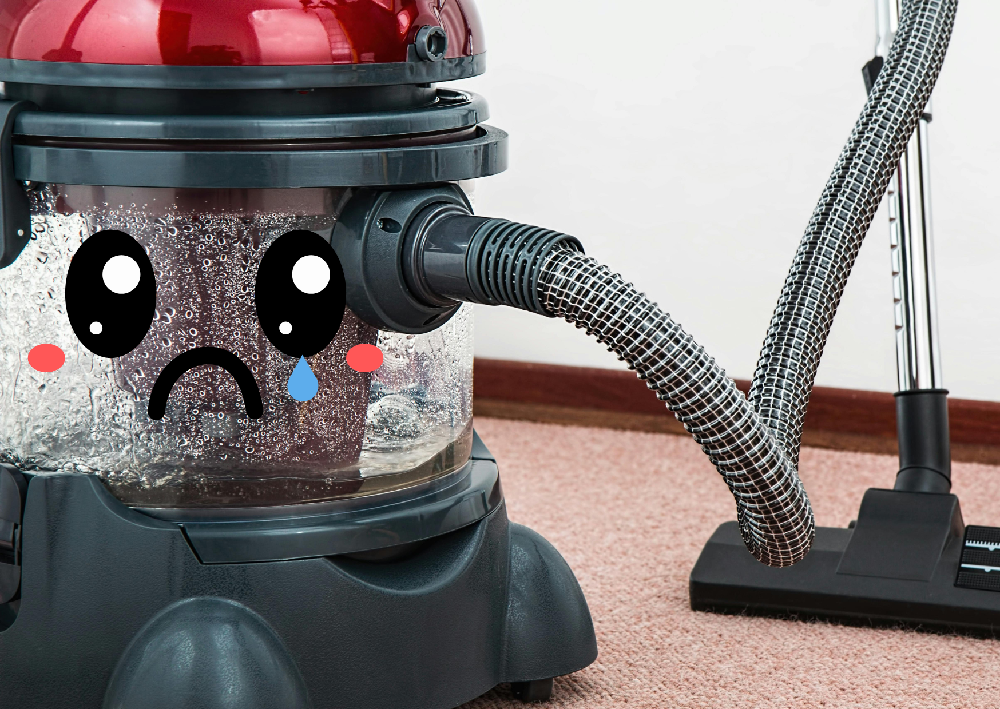
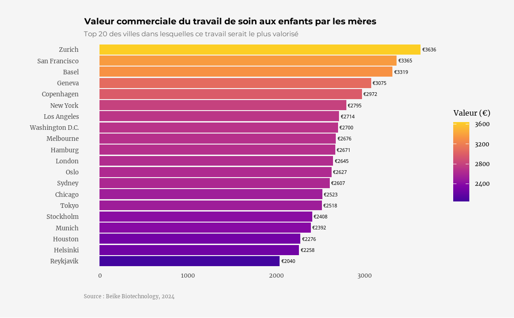
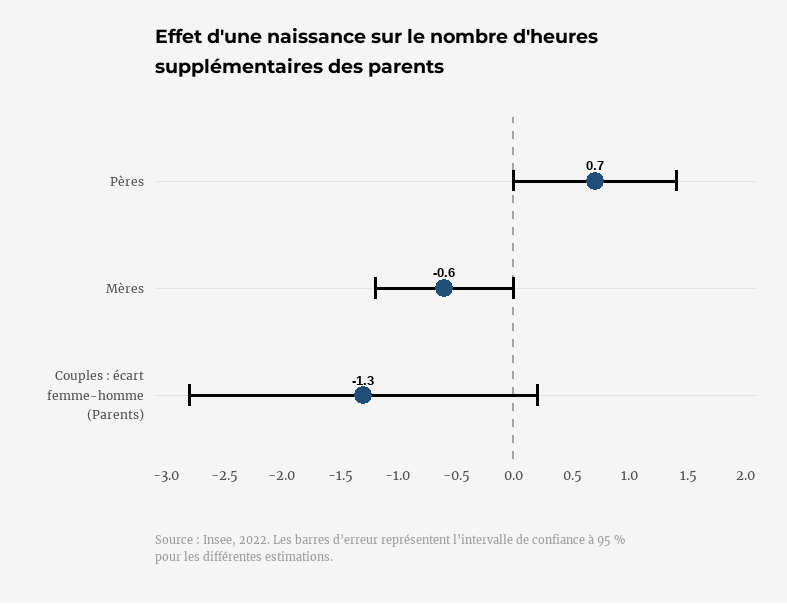

Pourquoi on ne fêtera jamais assez les mères (et pourquoi leur offrir un aspirateur ce week-end était la pire idée)
26 mai 2025

La Fête des mères, c'est “commercial” ?
Oui, un peu.
Mais ça peut être aussi l'occasion de reconnaître leur travail immense, invisible, et jamais compté dans le PIB.
Si le travail domestique et parental des mères était rémunéré, il vaudrait entre 4000 et 5400 € par mois dans les grandes villes occidentales. Soit jusqu'à 65 000 € par an.
Et pourtant :
- En France, 73 % des femmes en emploi vivant avec au moins un enfant mineur déclarent faire plus de 7 h de ménage par semaine, contre 31 % des hommes. Pour les mères à temps partiel avec un enfant de moins de 3 ans, ce chiffre grimpe à 85 %.
- Après une naissance, les mères passent 10 fois plus souvent à temps partiel que les pères. Leur temps de travail hebdomadaire baisse de 3,6 heures en moyenne. Un impact direct sur leur carrière, leur salaire, leurs perspectives.
Le salaire mensuel net diminue sensiblement pour les mères (-200€ en moyenne) et ne varie pas significativement pour les pères. La naissance d'un enfant a également pour conséquence une augmentation des heures supplémentaires chez les pères par rapport aux mères.
- Côté école, 7 enfants sur 10 en maternelle sont accompagné·es chaque matin par leur mère. Les devoirs ? La lecture ? Les rendez-vous médicaux ? Ce sont aussi elles qui assurent, dans deux tiers des cas (et davantage si elles ne travaillent pas).
Etre mère, ce n'est pas juste de l'amour, de la tendresse et des fleurs.
C'est aussi un deuxième travail, non rémunéré, non reconnu, essentiel à la société.
C'est pour ça qu'on ne fêtera jamais assez les mères.
Et sûrement pas avec un aspirateur, qui ne fait que réduire, encore une fois, la mère à la ménagère.
Vous aimez les stats qui déconstruisent les idées reçues ?
Abonnez-vous ma liste de diffusion en cliquant sur le bouton ci-dessous ↓
Je m'appelle Marie Vialaret. Je suis présidente de l'association tpà et conférencière sur les questions d'égalité de genre. Statisticienne de formation, je suis consultante indépendante en analyse de données.
Diplômée de la Toulouse School of Economics, j'ai ensuite étudié les statistiques appliquées à l'ENSAE ParisTech.